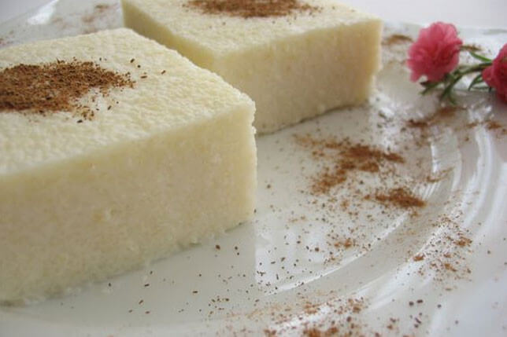

Sütlü İrmik Tatlısı
Bir irmik helvası değildir ama damakta güzel bir tat bırakır, hafif bir sütlü tatlı tarifi; sütlü irmik tatlısı. Soğuk yeniyor olması, çikolata sosu ve taze meyve dilimleriyle yakaladığı büyük uyum ile her zaman sevdiklerinize ve misafirlerinize hazırlayabileceğiniz irmik tatlı tariflerinden biri oluyor. Afiyet olsun.
Tarif: Altuğ ALTAY

Kaç kişilik:6 Hazırlama süresi: 10 dakika Pişirme süresi: 20 dakika
Sütlü İrmik Tatlısı Tarifi İçin Malzemeler:
- 1 litre süt
- 9 yemek kaşığı irmik
- 10 yemek kaşığı toz şeker
- 1 paket vanilin
- 1 yemek kaşığı tereyağı
- 1 çay kaşığı tarçın servis için
Sütlü İrmik Tatlısı Nasıl Yapılır?
- 1 litre soğuk sütü bir tencereye boşaltın. 10 yemek kaşığı şeker ve 9 yemek kaşığı irmiği ilave edin.
- Kısık ateşte boza kıvamına gelene kadar karıştırarak pişirin.
- 1 paket vanilya ve 1 yemek kaşığı tereyağı ekleyip karıştırdıktan sonra ocaktan alıp soğumaya bırakın.
- Su ile ıslattığınız bir kalıbın içine tatlıyı boşaltıp soğumaya bırakın. İrmik tatlısı soğuduktan sonra buzdolabında en az 4 saat bekletin.
- Tatlı iyice soğuduktan sonra kalıbın içerisinden çıkarın ve üzerine tarçın, Hindistan cevizi serperek ya da sevdiğiniz meyvelerle süsleyerek servis edin. Afiyet olsun.
Afiyet Olsun